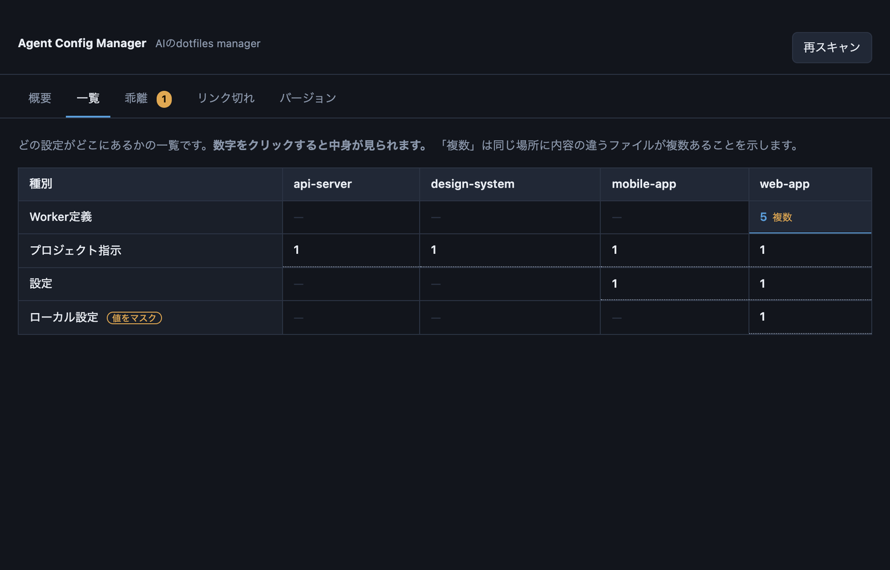

読み取りから始めて、必要なときだけ書き換えます。壊しても戻せる作りです。
種別 × プロジェクトの表で全設定を俯瞰。数字をクリックすれば中身も読めます。
同じ役割の設定が複数の場所で食い違っていると教えます。多数派を「揃える先」として提示します。
シンボリックリンクが切れて定義が読み込まれなくなっていても、エラーは出ません。それを見つけます。
APIキーやトークンは値だけ *** に。キー名は残るので、何が設定されているかは分かります。
いまの設定をまるごと保存して、あとから戻せます。復元前に何が変わるかを必ず確認できます。
よく使う構成に名前を付けて保存し、新しいプロジェクトへそのまま配れます。
起動したら勝手にスキャンします。設定は要りません。
~/.claude とプロジェクトフォルダを自動で走査して、設定を集めます。
一覧・ズレ・リンク切れの3つの見方で、いま何が起きているかを確認します。
揃える先を選ぶと、何が書き換わるかを先に見せます。納得してから実行します。

種別 × プロジェクトの一覧。数字をクリックすると中身が開きます
設定ファイルは大事なものなので、書き換えには全部ブレーキを付けています。
無料で使えます。気に入ったらコーヒーをおごってください。
macOS 12 以降 / Apple Silicon · 約4MB
初回起動時の注意： 署名なしアプリのため「開発元を確認できません」と出ます。右クリック →「開く」で起動してください。
外付けドライブを使っている場合： 設定が外部ボリューム上にあると、macOSがアクセス許可を求めます。許可しないとスキャン結果が0件になります。